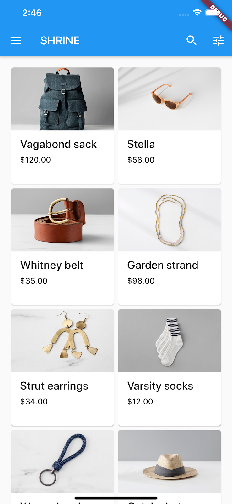

マテリアル コンポーネント (MDC) は、開発者がマテリアル デザインを実装するのに役立ちます。 Google のエンジニアと UX デザイナーのチームによって作成された MDC は、多数の美しく機能的な UI コンポーネントを備えており、Android、iOS、ウェブ、および Flutter.material.io/develop で利用できます。
Codelab MDC-101 では、2 つのマテリアル コンポーネントを使用してログイン ページを作成しました。テキスト フィールドとインクの波紋のあるボタンです。 次に、ナビゲーション、構造、およびデータを追加して、この基盤を拡張しましょう。
構築するもの
この Codelab では、衣料品や家庭用品を販売する e コマース アプリ、Shrine というアプリのホーム画面を作成します。 以下が含まれます。
- トップアプリバー
- 製品でいっぱいのグリッドリスト
Android | iOS |
 |
この Codelab の MDC-Flutter コンポーネントとサブシステム
- トップアプリバー
- グリッド
- カード
このラボを完了するには、Flutter SDK とエディタの 2 つのソフトウェアが必要です。
次のいずれかのデバイスを使用して Codelab を実行できます。
- コンピューターに接続され、開発者モードに設定されている物理的な Android または iOS デバイス。
- iOS シミュレーター (Xcode ツールのインストールが必要)。
- Android Emulator (Android Studio でのセットアップが必要)。
- ブラウザー (デバッグには Chrome が必要です)。
- Windows、Linux、または macOS デスクトップ アプリケーションとして。 展開する予定のプラットフォームで開発する必要があります。 そのため、Windows デスクトップ アプリを開発する場合は、適切なビルド チェーンにアクセスするために Windows で開発する必要があります。 docs.flutter.dev/desktop で詳しく説明されているオペレーティング システム固有の要件があります。
MDC-101の続き？
MDC-101 を完了している場合は、コードをこの Codelab 用に準備する必要があります。
手順にスキップ: トップ アプリ バーを追加します。
ゼロから始める？
Zip ダウンロード or Git Clone のどちらかの方法でダウンロードを行って下さい。
Zip ダウンロード
スターター プロジェクトは、material-components-flutter-codelabs-102-starter_and_101-complete/mdc_100_series ディレクトリにあります。
GitHub からクローンする
GitHub からこの Codelab のクローンを作成するには、次のコマンドを実行します。
git clone https://github.com/material-components/material-components-flutter-codelabs.git cd material-components-flutter-codelabs/mdc_100_series git checkout 102-starter_and_101-complete
プロジェクトを開いてアプリを実行する
- 選択したエディターでプロジェクトを開きます。
- Get Started: Test drive の「Run the app」の指示に従って、選択したエディターを使用します。
成功！ デバイスに MDC-101 Codelab の Shrine ログイン ページが表示されます。
Android | iOS |
|

ログイン画面が適切に表示されたので、アプリにいくつかの製品を入力してみましょう。
ここで、「次へ」ボタンをクリックすると、「You did it!」というホーム画面が表示されます。 それは素晴らしいことです！ しかし今、ユーザーは何もする必要がなく、アプリ内のどこにいるのかわかりません。 それを支援するために、ナビゲーションを追加します。
マテリアル デザインは、高度な使いやすさを保証するナビゲーション パターンを提供します。 最も目立つコンポーネントの 1 つは、上部のアプリ バーです。
ナビゲーションを提供し、ユーザーが他のアクションにすばやくアクセスできるようにするために、トップ アプリ バーを追加しましょう。
AppBar ウィジェットを追加する
home.dart で、AppBar を Scaffold に追加し、強調表示された const を削除します。
return const Scaffold(
// TODO: Add app bar (102)
appBar: AppBar(
// TODO: Add buttons and title (102)
),
AppBar を Scaffold の appBar: フィールドに追加すると、自由で完璧なレイアウトが得られ、AppBar をページの上部に、本文をその下に配置できます。
プロジェクトを保存します。 Shrine アプリが更新されたら、[次へ] をクリックしてホーム画面を表示します。
Android | iOS |
AppBar は見栄えがしますが、タイトルが必要です。
テキスト ウィジェットを追加する
home.dart で、タイトルを AppBar に追加します。
// TODO: Add app bar (102)
appBar: AppBar(
// TODO: Add buttons and title (102)
title: const Text('SHRINE'),
// TODO: Add trailing buttons (102)
プロジェクトを保存します。
Android | iOS |
多くのアプリ バーには、タイトルの横にボタンがあります。 アプリにメニュー アイコンを追加しましょう。
先頭の IconButton を追加する
home.dart にいる間に、AppBar の leading: フィールドに IconButton を設定します。 ( title: フィールドの前に配置して、先頭から末尾への順序を模倣します):
// TODO: Add buttons and title (102)
leading: IconButton(
icon: const Icon(
Icons.menu,
semanticLabel: 'menu',
),
onPressed: () {
print('Menu button');
},
),
プロジェクトを保存します。
Android | iOS |
メニュー アイコン (「ハンバーガー」とも呼ばれます) は、期待どおりの場所に表示されます。
タイトルの末尾にボタンを追加することもできます。 Flutter では、これらを「アクション」と呼びます。
アクションを追加
さらに 2 つの IconButtons 用のスペースがあります。
タイトルの後に AppBar インスタンスに追加します。
// TODO: Add trailing buttons (102)
actions: <Widget>[
IconButton(
icon: const Icon(
Icons.search,
semanticLabel: 'search',
),
onPressed: () {
print('Search button');
},
),
IconButton(
icon: const Icon(
Icons.tune,
semanticLabel: 'filter',
),
onPressed: () {
print('Filter button');
},
),
],
プロジェクトを保存します。 ホーム画面は次のようになります。
Android | iOS |
これで、アプリの右側に先頭のボタン、タイトル、および 2 つのアクションが表示されます。 アプリ バーには、コンテンツとは異なるレイヤー上にあることを示す微妙な影を使用して標高も表示されます。
アプリにある程度の構造ができたので、コンテンツをカードに配置して整理しましょう。
GridView を追加する
上部のアプリ バーの下に 1 つのカードを追加することから始めましょう。 カード ウィジェットだけでは、表示できる場所に配置するのに十分な情報がないため、GridView ウィジェットにカプセル化する必要があります。
Scaffold の本体の Center を GridView に置き換えます。
// TODO: Add a grid view (102) body: GridView.count( crossAxisCount: 2, padding: const EdgeInsets.all(16.0), childAspectRatio: 8.0 / 9.0, // TODO: Build a grid of cards (102) children: <Widget>[Card()], ),
そのコードをみてみましょう。 GridView は count() コンストラクターを呼び出します。これは、表示される項目の数がカウント可能で無限ではないためです。 ただし、レイアウトを定義するにはいくつかの情報が必要です。
crossAxisCount: 横断するアイテムの数を指定します。 2 つの列が必要です。
padding: フィールドは、GridView の 4 つの側面すべてにスペースを提供します。 もちろん、横に GridView の子がまだないため、末尾または下側のパディングは表示されません。
childAspectRatio: フィールドは、縦横比 (幅と高さ) に基づいてアイテムのサイズを識別します。
既定では、GridView はすべて同じサイズのタイルを作成します。
カードは 1 枚ありますが、空です。 カードに子ウィジェットを追加しましょう。
コンテンツをレイアウトする
カードには、画像、タイトル、およびセカンダリ テキスト用の領域が必要です。
GridView の子を更新します。
// TODO: Build a grid of cards (102)
children: <Widget>[
Card(
clipBehavior: Clip.antiAlias,
child: Column(
crossAxisAlignment: CrossAxisAlignment.start,
children: <Widget>[
AspectRatio(
aspectRatio: 18.0 / 11.0,
child: Image.asset('assets/diamond.png'),
),
Padding(
padding: const EdgeInsets.fromLTRB(16.0, 12.0, 16.0, 8.0),
child: Column(
crossAxisAlignment: CrossAxisAlignment.start,
children: <Widget>[
Text('Title'),
const SizedBox(height: 8.0),
Text('Secondary Text'),
],
),
),
],
),
)
],
このコードは、子ウィジェットを垂直にレイアウトするために使用される Column ウィジェットを追加します。
crossAxisAlignment: フィールドは、「テキストをリーディング エッジに揃える」ことを意味する CrossAxisAlignment.start を指定します。
AspectRatio ウィジェットは、提供された画像の種類に関係なく、画像の形状を決定します。
Padding は、テキストを横から少し引き込みます。
2 つの Text ウィジェットは、それらの間に 8 ポイントの空きスペース (SizedBox) を置いて垂直に積み重ねられます。 パディング内にそれらを収容する別の Column を作成します。
プロジェクトを保存します。
Android | iOS |
このプレビューでは、カードが端からはめ込まれ、角が丸く、影 (カードの高さを表す) があることがわかります。 全体の形状をマテリアルでは「コンテナ」と呼びます。 (Container と呼ばれる実際のウィジェット クラスと混同しないでください。)
カードは通常、他のカードと一緒にコレクションとして表示されます。 それらをコレクションとしてグリッドに配置しましょう。
複数のカードが画面に表示される場合は常に、1 つまたは複数のコレクションにグループ化されます。 コレクション内のカードは同一平面上にあります。つまり、カードは互いに同じ静止高度を共有します (カードが持ち上げられたりドラッグされたりしない限り、ここでは行いません)。
カードのコレクションを生成する
現在、Card は GridView の children: フィールドのインラインで構築されています。 これは、読みにくい多くのネストされたコードです。 必要な数の空のカードを生成できる関数に抽出して、カードのリストを返します。
build() 関数の上に新しいプライベート関数を作成します (アンダースコアで始まる関数はプライベート API であることを思い出してください)。
// TODO: Make a collection of cards (102)
List<Card> _buildGridCards(int count) {
List<Card> cards = List.generate(
count,
(int index) {
return Card(
clipBehavior: Clip.antiAlias,
child: Column(
crossAxisAlignment: CrossAxisAlignment.start,
children: <Widget>[
AspectRatio(
aspectRatio: 18.0 / 11.0,
child: Image.asset('assets/diamond.png'),
),
Padding(
padding: const EdgeInsets.fromLTRB(16.0, 12.0, 16.0, 8.0),
child: Column(
crossAxisAlignment: CrossAxisAlignment.start,
children: const <Widget>[
Text('Title'),
SizedBox(height: 8.0),
Text('Secondary Text'),
],
),
),
],
),
);
},
);
return cards;
}
生成されたカードを GridView の children フィールドに割り当てます。 GridView に含まれるすべてを次の新しいコードに置き換えることを忘れないでください。
// TODO: Add a grid view (102) body: GridView.count( crossAxisCount: 2, padding: const EdgeInsets.all(16.0), childAspectRatio: 8.0 / 9.0, children: _buildGridCards(10) // Replace ),
プロジェクトを保存します。
Android | iOS |
カードはありますが、まだ何も表示されていません。 ここで、製品データを追加します。
商品データを追加する
このアプリには、画像、名前、価格が記載された製品がいくつかあります。 カードにすでにあるウィジェットにそれを追加しましょう
次に、home.dart で、データ モデル用に提供した新しいパッケージといくつかのファイルをインポートします。
import 'package:flutter/material.dart'; import 'package:intl/intl.dart'; import 'model/product.dart'; import 'model/products_repository.dart';
最後に、_buildGridCards() を変更して製品情報を取得し、そのデータをカードで使用します。
// TODO: Make a collection of cards (102)
// Replace this entire method
List<Card> _buildGridCards(BuildContext context) {
List<Product> products = ProductsRepository.loadProducts(Category.all);
if (products.isEmpty) {
return const <Card>[];
}
final ThemeData theme = Theme.of(context);
final NumberFormat formatter = NumberFormat.simpleCurrency(
locale: Localizations.localeOf(context).toString());
return products.map((product) {
return Card(
clipBehavior: Clip.antiAlias,
// TODO: Adjust card heights (103)
child: Column(
// TODO: Center items on the card (103)
crossAxisAlignment: CrossAxisAlignment.start,
children: <Widget>[
AspectRatio(
aspectRatio: 18 / 11,
child: Image.asset(
product.assetName,
package: product.assetPackage,
// TODO: Adjust the box size (102)
),
),
Expanded(
child: Padding(
padding: const EdgeInsets.fromLTRB(16.0, 12.0, 16.0, 8.0),
child: Column(
// TODO: Align labels to the bottom and center (103)
crossAxisAlignment: CrossAxisAlignment.start,
// TODO: Change innermost Column (103)
children: <Widget>[
// TODO: Handle overflowing labels (103)
Text(
product.name,
style: theme.textTheme.headline6,
maxLines: 1,
),
const SizedBox(height: 8.0),
Text(
formatter.format(product.price),
style: theme.textTheme.subtitle2,
),
],
),
),
),
],
),
);
}).toList();
}
注: まだコンパイルおよび実行されません。 もう1つ変更があります。
また、コンパイルを試みる前に BuildContext を _buildGridCards() に渡すように build() 関数を変更します。
// TODO: Add a grid view (102) body: GridView.count( crossAxisCount: 2, padding: const EdgeInsets.all(16.0), childAspectRatio: 8.0 / 9.0, children: _buildGridCards(context) // Changed code ),
アプリをホット リスタートします。
Android | iOS |
カード間に垂直方向のスペースを追加していないことに気付くかもしれません。 これは、デフォルトで上下に 4 ポイントのパディングがあるためです。
プロジェクトを保存します。
商品データは表示されますが、画像の周りに余分なスペースがあります。 画像は、デフォルトで .scaleDown の BoxFit で描画されます (この場合)。 これを .fitWidth に変更して、少し拡大して余分な空白を削除しましょう。
BoxFit.fitWidth の値を持つ画像に fit: フィールドを追加します。
// TODO: Adjust the box size (102) fit: BoxFit.fitWidth,
Android | iOS |
当社の製品がアプリに完全に表示されるようになりました!
私たちのアプリには、ユーザーがログイン画面から製品を表示できるホーム画面に移動する基本的なフローがあります。 わずか数行のコードで、トップ アプリ バー (タイトルと 3 つのボタンを含む) とカード (アプリのコンテンツを表示するため) を追加しました。 ホーム画面は、基本的な構造と実用的なコンテンツを備えた、シンプルで機能的なものになりました。
次のステップ
上部のアプリ バー、カード、テキスト フィールド、ボタンで、MDC-Flutter ライブラリの 4 つのコア コンポーネントを使用しました。 Flutter ウィジェット カタログにアクセスすると、さらに多くのコンポーネントを調べることができます。
アプリは完全に機能していますが、まだ特定のブランドや視点を表現していません。 MDC-103: 色、形状、高さ、タイプを使用したマテリアル デザインのテーマでは、これらのコンポーネントのスタイルをカスタマイズして、活気に満ちたモダンなブランドを表現します。